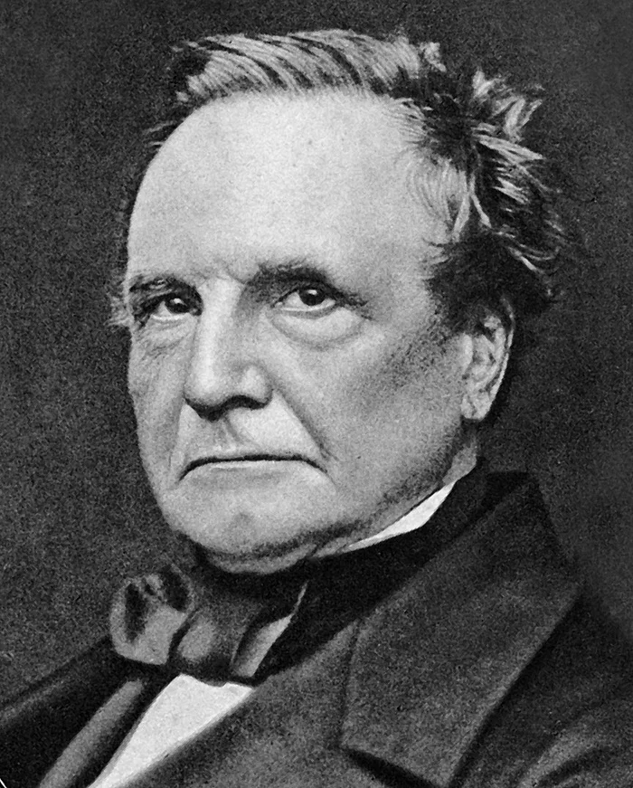

Чарльз Бэббидж - отец компьютера

Чарльз Бэббидж (1791-1871)
Английский математик, философ, механик и программист, известный как "отец компьютера".
Вклад в науку
Чарльз Бэббидж разработал концепцию первой программируемой вычислительной машины, которая считается предшественницей современных компьютеров. Его наиболее известные изобретения:
- Разностная машина — механическое устройство для автоматического вычисления полиномиальных функций
- Аналитическая машина — проект программируемого механического компьютера общего назначения
Интересные факты
Несмотря на то, что Бэббидж не смог построить полнофункциональные машины при жизни из-за финансовых и технологических ограничений, его идеи были революционными для своего времени:
- Аналитическая машина включала в себя все основные элементы современного компьютера: память, процессор, устройства ввода и вывода
- Бэббидж сотрудничал с Адой Лавлейс, которая написала первый в истории алгоритм для машины Бэббиджа, став тем самым первым программистом в истории
- В 1991 году, по оригинальным чертежам Бэббиджа, была построена действующая разностная машина, которая работает безупречно
Цитаты
"В каждом уравнении я вижу воплощение красоты, которую другие находят в живописи или поэзии."
"Ошибки, которые в машинах возникают из-за неправильных данных, превосходят по числу те, которые происходят из-за неправильного мышления."